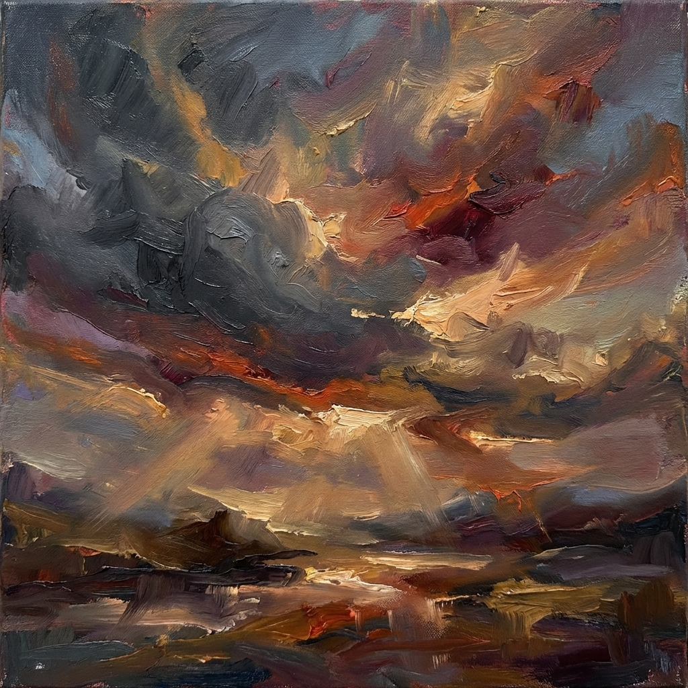

Quando il cielo cambia

D’impeto percorro strade ignare
mille anfratti, labirinti di cuori
ottenebrati e oltraggiati,
pensieri ingiuriati.
mille anfratti, labirinti di cuori
ottenebrati e oltraggiati,
pensieri ingiuriati.
Ah, potessi cullar me stessa
quando ombre profonde e inquiete
fiancheggiano i miei passi,
quando ombre profonde e inquiete
fiancheggiano i miei passi,
quando seducono i pensieri
e prigionieri vanno alle paure.
e prigionieri vanno alle paure.
Evinsi infine
che non v’è mano umana
e di Te implorai l’aiuto.
che non v’è mano umana
e di Te implorai l’aiuto.
Oltre l’ immaginato confine
sfuggenti bagliori colmi di promesse
sfiorano gli occhi
sfuggenti bagliori colmi di promesse
sfiorano gli occhi
brividi percorrono la pelle
e mi rubano un sorriso.
e mi rubano un sorriso.
Paola Spremulli